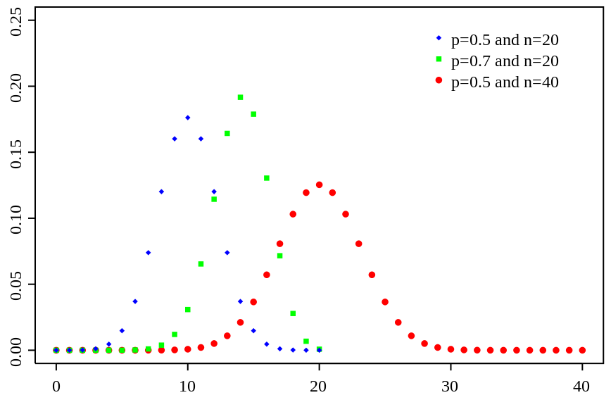

Binomial Distribution

- Notation:
- $$S ∼ Bin(n, p)$$
Interpretation:
- Binomial Random Variable is used for study the chance of occurring of a sequence experiment or trial with probability p for successful occurrence and probability 1-p for unsuccessful occurrence. Note that the number of trials is fixed, the probability of success is the same for each trials and each trial are independent of each other.
- Type:
- Discrete
- Parameter(s):
- n - the number of trails
- p - probability of success on a single trial
- Probability Density Function:
- $$f(x)=\dbinom{n}{x} p^x (1-p)^{n-x}$$
- where $$ \dbinom{n}{x} = \frac{n!}{k!(n-k)!}$$ The expression is known as the binomial coefficient, stated as "n choose k," or the number of possible ways to choose k "successes" from n observations. For example, the number of ways to achieve 2 heads in a set of four tosses is "4 choose 2" = 6.
- Range:
- $$n \in [0, \infty)$$
- $$x \in [0, n]$$
- $$p \in [0, 1]$$
- Mean:
- $$E(S) = np$$
- Variance:
- Var(S) = np(1 - p)
Application:
Generally, Binomial Distribution is used when we need to find the probability that the number of successful trials occur out of a fixed number of trials. The experiment has to satisfy the following:
- There are fixed number of trials in the experiment.
- Each trial is independent of each other.
- For each trial, there are only two outcomes - success or failure.
- The probability of the outcomes for each trials remain the same throughout the experiment.
Some examples in real world can be simulated by binomial distribution
Given the probability of the coin flip for each side, we can estimate the number of heads or tails in a sequence of n coin flips.
Suppose we know that the probability of a power outage happens is 0.01 on each day, we can use binomial distribution to simulate the number of days in a year your apartment experience a power outage. Furthermore, since the probability is very small in this case, we can use normal distribution to approximate the binomial distribution we constructed to obtain more accurate estimation.